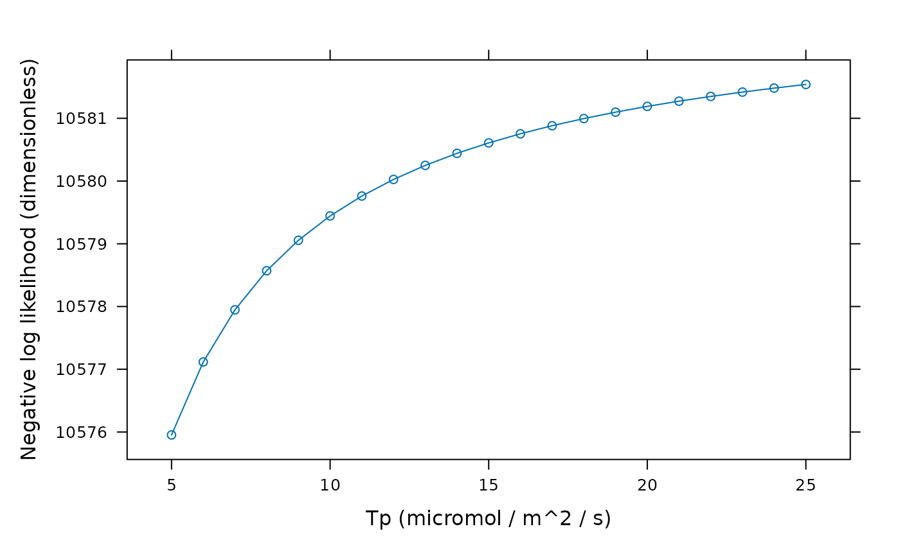

Generate an error function for C3 Variable J curve fitting
error_function_c3_variable_j.RdCreates a function that returns an error value (the negative of the natural
logarithm of the likelihood) representing the amount of agreement between
modeled and measured An values. When this function is minimized, the
likelihood is maximized.
Internally, this function uses link{calculate_c3_variable_j} and
link{calculate_c3_assimilation} to calculate assimilation rate values
that are compared to the measured ones.
Usage
error_function_c3_variable_j(
replicate_exdf,
fit_options = list(),
sd_A = 1,
Wj_coef_C = 4.0,
Wj_coef_Gamma_star = 8.0,
a_column_name = 'A',
ci_column_name = 'Ci',
gamma_star_norm_column_name = 'Gamma_star_norm',
j_norm_column_name = 'J_norm',
kc_norm_column_name = 'Kc_norm',
ko_norm_column_name = 'Ko_norm',
oxygen_column_name = 'oxygen',
phips2_column_name = 'PhiPS2',
qin_column_name = 'Qin',
rl_norm_column_name = 'RL_norm',
total_pressure_column_name = 'total_pressure',
tp_norm_column_name = 'Tp_norm',
vcmax_norm_column_name = 'Vcmax_norm',
cj_crossover_min = NA,
cj_crossover_max = NA,
hard_constraints = 0,
require_positive_gmc = 'positive_a',
gmc_max = Inf,
check_j = TRUE,
...
)Arguments
- replicate_exdf
An
exdfobject representing one CO2 response curve.- fit_options
A list of named elements representing fit options to use for each parameter. Values supplied here override the default values (see details below). Each element must be
'fit','column', or a numeric value. A value of'fit'means that the parameter will be fit; a value of'column'means that the value of the parameter will be taken from a column inreplicate_exdfof the same name; and a numeric value means that the parameter will be set to that value. For example,fit_options = list(alpha_g = 0, Vcmax_at_25 = 'fit', Tp_at_25 = 'column')means thatalpha_gwill be set to 0,Vcmax_at_25will be fit, andTp_at_25will be set to the values in theTp_at_25column ofreplicate_exdf.- sd_A
The standard deviation of the measured values of the net CO2 assimilation rate, expressed in units of
micromol m^(-2) s^(-1). Ifsd_Ais not a number, then there must be a column inreplicate_exdfcalledsd_Awith appropriate units. A numeric value supplied here will overwrite the values in thesd_Acolumn ofreplicate_exdfif it exists.- Wj_coef_C
A coefficient in the equation for RuBP-regeneration-limited carboxylation, whose value depends on assumptions about the NADPH and ATP requirements of RuBP regeneration; see
calculate_c3_assimilationfor more information.- Wj_coef_Gamma_star
A coefficient in the equation for RuBP-regeneration-limited carboxylation, whose value depends on assumptions about the NADPH and ATP requirements of RuBP regeneration; see
calculate_c3_assimilationfor more information.- a_column_name
The name of the column in
replicate_exdfthat contains the net assimilation inmicromol m^(-2) s^(-1).- ci_column_name
The name of the column in
replicate_exdfthat contains the intercellular CO2 concentration inmicromol mol^(-1).- gamma_star_norm_column_name
The name of the column in
replicate_exdfthat contains the normalizedGamma_starvalues (with units ofnormalized to Gamma_star at 25 degrees C).- j_norm_column_name
The name of the column in
replicate_exdfthat contains the normalizedJvalues (with units ofnormalized to J at 25 degrees C).- kc_norm_column_name
The name of the column in
replicate_exdfthat contains the normalizedKcvalues (with units ofnormalized to Kc at 25 degrees C).- ko_norm_column_name
The name of the column in
replicate_exdfthat contains the normalizedKovalues (with units ofnormalized to Ko at 25 degrees C).- oxygen_column_name
The name of the column in
replicate_exdfthat contains the concentration of O2 in the ambient air, expressed as a percentage (commonly 21% or 2%); the units must bepercent.- phips2_column_name
The name of the column in
replicate_exdfthat contains values of the operating efficiency of photosystem II (dimensionless).- qin_column_name
The name of the column in
replicate_exdfthat contains values of the incident photosynthetically active flux density inmicromol m^(-2) s^(-1).- rl_norm_column_name
The name of the column in
replicate_exdfthat contains the normalizedRLvalues (with units ofnormalized to RL at 25 degrees C).- total_pressure_column_name
The name of the column in
replicate_exdfthat contains the total pressure inbar.- tp_norm_column_name
The name of the column in
replicate_exdfthat contains the normalizedTpvalues (with units ofnormalized to Tp at 25 degrees C).- vcmax_norm_column_name
The name of the column in
replicate_exdfthat contains the normalizedVcmaxvalues (with units ofnormalized to Vcmax at 25 degrees C).- cj_crossover_min
The minimum value of
Cc(in ppm) whereAjis allowed to become the overall rate-limiting factor. Ifcj_crossover_minis set toNA, this restriction will not be applied.- cj_crossover_max
The maximim value of
Cc(in ppm) whereWjis allowed to be smaller thanWc. Ifcj_crossover_maxis set toNA, this restriction will not be applied.- hard_constraints
To be passed to
calculate_c3_assimilationandcalculate_c3_variable_j; see those functions for more details.- require_positive_gmc
A character string specifying the method to be used for requiring positive values of mesophyll conductance. Can be
'none','all', or'positive_a'. See below for more details.- gmc_max
The maximum value of mesophyll conductance that should be considered to be acceptable. See below for more details.
- check_j
A logical (TRUE/FALSE) value indicating whether to check whether
J_F > J_tl. See below for more details.- ...
Additional arguments to be passed to
calculate_c3_assimilation.
Details
When fitting A-Ci + chlorophyll fluorescence curves using the Variable J
method, it is necessary to define a function that calculates the likelihood
of a given set of alpha_g, alpha_old, alpha_s,
alpha_t, Gamma_star, J_at_25, RL_at_25,
tau, Tp_at_25, and Vcmax_at_25 values by comparing a
model prediction to a measured curve. This function will be passed to an
optimization algorithm which will determine the values that produce the
smallest error.
The error_function_c3_variable_j returns such a function, which is
based on a particular replicate and a set of fitting options. It is possible
to just fit a subset of the available fitting parameters; by default, the
fitting parameters are alpha_old, J_at_25, RL_at_25,
Tp_at_25, tau, and Vcmax_at_25. This behavior can be
changed via the fit_options argument.
For practical reasons, the function actually returns values of -ln(L),
where L is the likelihood. The logarithm of L is simpler to
calculate than L itself, and the minus sign converts the problem from
a maximization to a minimization, which is important because most optimizers
are designed to minimize a value.
Sometimes an optimizer will choose biologically unreasonable parameter values that nevertheless produce good fits to the supplied assimilation values. There are several options for preventing an optimizer from choosing such parameter values:
Enforcing Rubisco limitations: A common problem is that the fit result may not indicate Rubisc-limited assimilation at low CO2 values, which should be the case for any A-Ci curves measured at saturating light. In this case, the optionalcj_crossover_minandcj_crossover_maxcan be used to constrain the range ofCcvalues (in ppm) whereWjis allowed to be the overall rate limiting factor. If the crossover from Rubisco-limited to RuBP-regeneration limited carboxylation occurs outside these bounds (when they are supplied), a heavy penalty will be added to the error function, preventing the optimizer from choosing those parameter values.Requiring positive gmc: The Variable J method sometimes predicts negative values of the mesophyll conductance (gmc). Such values are probably not realistic, especially whenCcis above the CO2 compensation point. Therequire_positive_gmcinput argument can be used to penalize negative values ofgmc. Whenrequire_positive_gmcis'all', a heavy penalty will be added to the error function if there are any negativegmcvalues. Whenrequire_positive_gmcis'positive_a', a heavy penalty will be added to the error function if there are any negativegmcvalues whenAis positive; negativegmcfor negativeAwill be allowed. Whenrequire_positive_gmcis'none', these restrictions are disabled and no penalties are added for negativegmc.Preventing large values of gmc: The Variable J method sometimes produces unreasonably high values ofgmc. Thegmc_maxargument can be used to address this. If any predictedgmcvalues exceedgmc_maxwhenAis positive, a heavy penalty will be added to the error function.Enforcing consistent RuBP regeneration rates: In principle, the actual RuBP regeneration rate (J_F) should always be less than or equal to its maximum value for a givenQinand leaf temperature (J_tl), with equality only occuring when assimilation is RuBP-regeneration-limited. Whencheck_jisTRUE, a heavy penalty will be added to the error function for any parameter values whereJ_Fis greater thanJ_tlat any point in the curve.
A penalty is also added for any parameter combination where An is not a
number, or where calculate_c3_variable_j or
calculate_c3_assimilation produce an error.
Value
A function with one input argument guess, which should be a numeric
vector representing values of the parameters to be fitted (which are specified
by the fit_options input argument.) Each element of guess is the
value of one parameter (arranged in alphabetical order.) For example, with the
default settings, guess should contain values of alpha_old,
J_at_25, RL_at_25, tau, Tp_at_25, and
Vcmax_at_25 (in that order).
Examples
# Read an example Licor file included in the PhotoGEA package
licor_file <- read_gasex_file(
PhotoGEA_example_file_path('c3_aci_1.xlsx')
)
# Define a new column that uniquely identifies each curve
licor_file[, 'species_plot'] <-
paste(licor_file[, 'species'], '-', licor_file[, 'plot'] )
# Organize the data
licor_file <- organize_response_curve_data(
licor_file,
'species_plot',
c(9, 10, 16),
'CO2_r_sp'
)
# Calculate the total pressure in the Licor chamber
licor_file <- calculate_total_pressure(licor_file)
# Calculate temperature-dependent values of C3 photosynthetic parameters
licor_file <- calculate_temperature_response(licor_file, c3_temperature_param_bernacchi)
# Define an error function for one curve from the set
error_fcn <- error_function_c3_variable_j(
licor_file[licor_file[, 'species_plot'] == 'tobacco - 1', , TRUE]
)
# Evaluate the error for:
# alpha_old = 1.9
# J_at_25 = 270
# RL_at_25 = 1.9
# tau = 0.42
# Tp_at_25 = 8.7
# Vcmax_at_25 = 258
error_fcn(c(1.9, 270, 1.9, 0.42, 8.7, 258))
#> [1] 33.33817
# Make a plot of error vs. Tp_at_25 when the other parameters are fixed to the
# values above. As Tp_at_25 increases, it eventually stops limiting the
# assimilation rate and its value stops influencing the error.
tpu_error_fcn <- function(Tp_at_25) {error_fcn(c(1.9, 270, 1.9, 0.42, Tp_at_25, 258))}
tpu_seq <- seq(5, 12, by = 0.25)
lattice::xyplot(
sapply(tpu_seq, tpu_error_fcn) ~ tpu_seq,
type = 'b',
xlab = 'Tp at 25 degrees C (micromol / m^2 / s)',
ylab = 'Negative log likelihood (dimensionless)'
)
